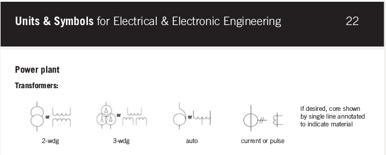

Have read through the building blocks stuff... So the default CT supplied by the shop is the -000 ot 100A version, as this is the normal maximum in the UK. The CT outputs a relative voltage 0 to 1 V dependant on the current that is going through the core. The emonTx 3.4 has a voltage divider circuit to earth with 11 ohms and 1k ohms then on to the ADC (apart from CT4 which is 60 ohm and 1 Kohn) So, if two CTs are plugged in on CT1 and CT2, and the same current is passing, the same voltage should be seen. However, if a -020 clamp is used, which supposed has 5 times the turns of the 100A, so a 0-20 A range maps to 0-1 V, then in theory within emonTx a conversion of dividing by 5 should be required to re-scale the calibration factors. But, in my case.... I have not performed calibration, I have the 000 in CT1, and the -020 in CT2 (16 A maximum on that circuit), and yet the values from both appear correct (i.e. XT2 is not 5 times the size it should be) Where is my logic flawed?
What am I misunderstanding about the CT clamps and burden resistors
Submitted by coldpenguin on Fri, 10/04/2015 - 21:36»
Re: What am I misunderstanding about the CT clamps and burden resistors
The current transformer outputs a current, not a voltage. The burden resistor turns that current into a voltage. The burden resistor is the 22 Ω (not 11 Ω). The 1 kΩ in series with the input is to limit the current in an attempt to protect the input in case of a spike.
An -020 current transformer (Don't call it a clamp, it isn't. The correct name is split-core current transformer. When you write "clamp", I think of a busbar clamp.) is not a true current transformer, because it has a built-in burden resistor. Therefore it does not need the on-board burden, which must be removed for correct operation. As far as I'm aware, all the YHDC-013-xxx units are identical in construction, the difference being the "voltage output" kind have the burden resistor built-in. So that's where your logic is failing.
Re: What am I misunderstanding about the CT clamps and burden resistors
"Clamp" is an Americanism for a current measuring device that "clamps" onto the wire.
See Flukes US website. http://en-us.fluke.com/products/clamp-meters/ (hmm, the UK site is the same, so maybe this is an electronics vs electricians thing)
Re: What am I misunderstanding about the CT clamps and burden resistors
This is a clamp. Note the tensioning screw.
As far as I'm concerned, the authoritative reference is "Units & Symbols for Electrical & Electronic Engineering" published by the IET. At the top of Page 22

and I can't see the word "clamp" anywhere.
List of Standards used in compilation of 'Units & Symbols'
British Standards Institution (BSI) Publications
BS 3363: 1988 Letter symbols for semiconductor devices and integrated microcircuits
BS 3939: 1992 Graphical symbols for electrical power, telecommunications and electronics diagrams
BS 4058: 1995 Data processing flow chart symbols, rules and conventions
BS 5070: 1991 Engineering diagram drawing practice. Part 4: recommendations for logic diagrams
BS 5555: 1993 SI Units and recommendations for the use of their multiples (ISO 1000: 1992) and of certain other units
BS 5775: 1993 Quantities, units and symbols. Part 5: electricity and (ISO 31: 1992) magnetism. Part 11: mathematical signs and symbols for use in the physical sciences and technology
Note: The information given in the Booklet is in accordance (where relevant) with the Council* Directive on Units of Measurement
(1991).
*The Council of the European Communities
Anyway, do you now understand CTs a bit better?
Re: What am I misunderstanding about the CT clamps and burden resistors
Quote:
"As far as I'm aware, all the YHDC-013-xxx units are identical in construction, "
That is hat I thought too, but it seems that the -000 is a special case perhaps compared to all the others I saw.
When I call it a clamp it is because in my mind it is the business end of the clamp-on ammeters I have used in the past.
When I looked at the schematics for the emonTx earlier in the week, it had two 22 ohm resistors in parallel, which I believe is equiv. To 11 ohm. Then the 1 k ohm to the ADC.
I couldn't think of a good reason for this, apart to make it more similar to the CT4 circuit where there are two 120 ohm in parallel, would equate to 60 ohm, which is less common
Or at least I thought so, just went to the github to view the images again, and they seem to be unviewable on this computer.
I guess I must have been very lucky that the 020 gives 'correct' answers then (compared with the inverter reading and the immersion calculated value).
Re: What am I misunderstanding about the CT clamps and burden resistors
The "000" is different only in that it does not have the in-built burden resistors (and it has zenor diodes that may not be in the rest?). which is why it outputs current rather than voltage and a burden resistor is required external to the CT,
When looking at the schematics there are smt and through hole component foot prints, Only the smt components are fitted (usually) so the parallel resistance calcs are not required eg CT4 has a 120R SMT and a unpopulated through hole position too. so it's 120R not 60R.
You can ignore the 1K for calculations, it's purpose is to protect the AVR and shouldn't be factored into burden resistor calcs.
Paul
Re: What am I misunderstanding about the CT clamps and burden resistors
Considering your -020 CT, it has (as far as I know) the same number of secondary turns as the -000, therefore it will produce the same pro-rata current as the -000. From that, I infer that the inbuilt burden resistor is approx 5 × 22 Ω. However, if you have not removed the on-board burden, that is in parallel with the internal one, effectively giving you a burden of 0.8333 × 22 Ω
So I think both are reading similar values, the difference being the -020 will be reading 16.7% low, which you may not have noticed unless you checked them one against the other on the same cable.
And the purpose of the non-existent through-hole parallel resistor is so that you can remove the SMT burden resistor and replace it with a wire-ended one of your choice, should you want to alter the sensitivity of that channel.
Re: What am I misunderstanding about the CT clamps and burden resistors
Ok, thanks. I am used to schematics showing the logical connections for a system only, and the boards showing the physical connectors.
Will check again the accuracy. The inverter reads out every 5 minutes roughly, so perhaps that is why I am not seeing it as inaccurate. I think it was around 5% roughly, which didn't seem unreasonable given possible losses, and that the inverter only reports intermittently.
Re: What am I misunderstanding about the CT clamps and burden resistors
I've always known a schematic diagram as one that shows the "scheme" - that is, it shows the logical arrangement, it does not show the physical arrangement. Therefore it includes an interconnections diagram and single-line diagram, but excludes the PCB track layout, the silk screen details, the drilling details, the drawings showing dimensions and positions of the cut-outs for the end covers, etc.